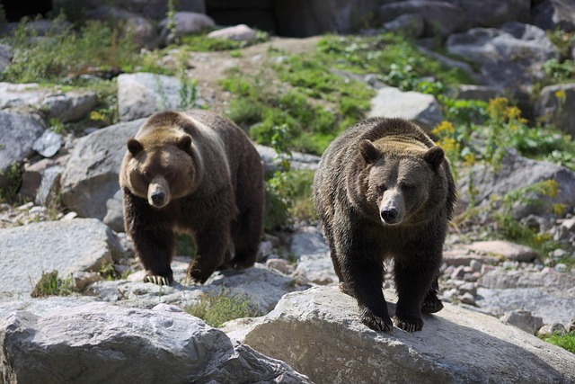

Es un habitante característico de los bosques maduros de Europa, Asia templada y América del Norte. En
este vasto territorio aparece bajo cierto número de subespecies, que se diferencian unas de otras por la
coloración y el tamaño, hasta tal punto que antiguamente se les consideraba como especies autóctonas.
Podemos citar, por ejemplo, a los grandes grizzlys (Ursus arctos horribilis) y el kodiak (Ursus arctos
middendorffi). Su longevidad es de veinticinco a treinta años (máximos conocidos de treinta y cuatro
años en estado silvestre y cuarenta y siete en cautividad). Tiene una longitud corporal de entre 1,50 y
2,95 m, dependiendo de la subespecie, y una altura en la cruz de hasta 1,30 m. Su peso también varía,
desde los 100 hasta los 675 kg. El color es muy variable de un individuo a otro. Puede variar entre el
marrón muy oscuro y el dorado claro, pasando por diversas gamas de grises. Las crías suelen presentar un
collar blanquecino más o menos amplio alrededor del cuello, marca que habitualmente desaparece a partir
de la primera muda al año de edad, pero puede quedar algún resto en los adultos. El pelaje se renueva
una vez al año, en la época estival. La visión no la tiene muy desarrollada comparada con otros
sentidos, aunque sí puede ver en color durante la noche. A larga distancia reconocen formas pero no
detalles, y detectan mucho mejor animales u objetos en movimiento que inmóviles.
Son plantígrados. En algunas situaciones desfavorables pueden erguirse sobre sus patas traseras para
aumentar su campo de visión. Su oído es extremadamente agudo y desarrollado, al igual que el olfato, que
es excelente, finísimo y, sin duda, su sentido más desarrollado y el que más les ayuda en su vida
cotidiana. Gracias a él pueden detectar a larga distancia muchas de sus fuentes de alimento y también el
estado sexual de otros ejemplares durante la época de celo. Sus mandíbulas tienen cuatro caninos o
colmillos, puntiagudos y robustos como los de otros carnívoros. Sin embargo, la presencia de incisivos
aptos para cortar hierba y tallos, y de molares amplios y aplanados capaces de triturar alimentos de
origen vegetal, hacen que la dentadura de este carnívoro esté perfectamente adaptada a un régimen
omnívoro.
Oso pardo en su hábitat natural de Europa.
Dimorfismo Sexual
El dimorfismo sexual es algo claramente notorio en los osos pardos; un ejemplo son los osos kodiak: en
estado salvaje, los machos de esta subespecie normalmente alcanzan un peso de alrededor de 450 kg (esto
sin el peso adicional que adquieren durante la migración del salmón, antes de la hibernación), mientras
que las hembras suelen pesar unos 250 kg, siendo considerablemente más pequeñas. Pasa lo mismo con el
grizzly: los machos generalmente pesan algo menos de 400 kg y las hembras alrededor de 200 kg. Esto
sucede también con todas las demás subespecies.

Machos y hembras muestran diferencias de tamaño notables.
Evolución y taxonomía
El oso pardo se denomina a veces bruin, del inglés medio. Este nombre tiene su origen en la fábula
Historia de Roman de Renart traducida por William Caxton del neerlandés medio. bruun o bruyn, que
significa marrón (el color).[3][4] En los Estados Unidos de mediados del siglo XIX, al oso pardo se le
llamaba Old Ephraim y a veces como Moccasin Joe.[5]
El nombre científico del oso pardo, Ursus arctos, proviene del latín ursus, que significa "oso",[6] y de
ἄρκτος arktos, la palabra griega para pardo.[7]
Restos fósiles del oso pardo hallados en Asia y Europa.
Nombres generalizados y evolución
Se cree que los osos pardos evolucionaron a partir del Ursus etruscus en Asia.[8][9] El oso pardo,
según Kurten (1976), se ha declarado como "claramente derivado de la población asiática de Ursus savini
hace unos 800 000 años; se extendió a Europa, al Nuevo Mundo".[10] Un análisis genético indicó que el
linaje del oso pardo divergió del complejo de especies oso de las cavernas hace aproximadamente 1,2-1,4
millones de años, pero no aclaró si U. savini persistió como una paraespecie del oso pardo antes de
perecer.[11] Los fósiles más antiguos identificados como de esta especie se encuentran en China y datan
de hace unos 0,5 millones de años. Los osos pardos llegaron a Europa hace unos 250.000 años y al norte
de África poco después.[8][12] Los restos de oso pardo del Pleistoceno son comunes en las islas
británicas, donde se cree que podrían haber superado a los osos de las cavernas (Ursus spelaeus). La
especie entró en Alaska hace 100 000 años, aunque no se desplazaron hacia el sur hasta hace 13 000
años.[8] Se especula que los osos pardos no pudieron migrar hacia el sur hasta la extinción del mucho
más grande oso gigante de cara corta (Arctodus simus).[13][14]
Varios paleontólogos sugieren la posibilidad de dos migraciones separadas de osos pardos: se cree que los
osos pardos del interior, también conocidos como grizzlies, proceden de osos de cráneo estrecho que
migraron desde el norte de Siberia hasta el centro de Alaska y el resto del continente, mientras que los
osos de Kodiak descienden de osos de cráneo ancho de Kamchatka, que colonizaron la península de Alaska.
Los fósiles de oso pardo descubiertos en Ontario, Ohio, Kentucky y Labrador demuestran que la especie se
encontraba más al este de lo que indican los registros históricos.[8] En Norteamérica, se reconocen
generalmente dos tipos de la subespecie Ursus arctos horribilis: el oso pardo costero y el oso pardo del
interior; estos dos tipos definen ampliamente la gama de tamaños de todas las subespecies de oso pardo.
Taxonomía científica
Hembra adulta de oso pardo euroasiático, la subespecie nominal, en Eslovenia
Los científicos utilizan muchos métodos para definir las especies y subespecies de oso, ya que ninguno de
ellos es siempre eficaz. La taxonomía del oso pardo y la clasificación de las subespecies se ha descrito
como "formidable y confusa", con pocas autoridades enumerando el mismo conjunto específico de
subespecies.[15] Las pruebas genéticas son ahora quizás la forma más importante de definir
científicamente las relaciones y los nombres de los osos pardos. Generalmente, las pruebas genéticas
utilizan la palabra clado en lugar de especie porque una prueba genética por sí sola no puede definir
una especie biológica. La mayoría de los estudios genéticos informan sobre lo estrechamente relacionados
que están los osos (o su distancia genética). Existen cientos de subespecies obsoletas de oso pardo,
cada una con su propio nombre, y esto puede llegar a ser confuso; Hall (1981) enumera 86 tipos
diferentes, e incluso se han propuesto hasta 90.[16][17] Sin embargo, recientes análisis de ADN han
identificado hasta cinco clados principales que contienen todos los osos pardos existentes,[18][19]
mientras que un estudio filogenético de 2017 reveló nueve clados, incluido uno que representa a los osos
polares,[20] 15 subespecies existentes o extinguidas recientemente fueron reconocidas por la comunidad
científica general.[21]